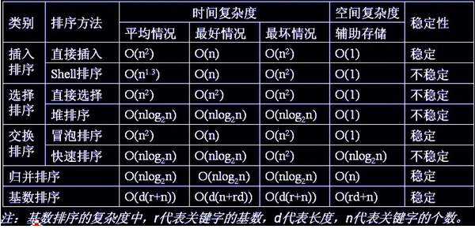

冒泡排序 √ 设数组长度为N。
1．比较相邻的前后二个数据，如果前面数据大于后面的数据，就将二个数据交换。
2．这样对数组的第0个数据到N-1个数据进行一次遍历后，最大的一个数据就“沉”到数组第N-1个位置。
3．N=N-1，如果N不为0就重复前面二步，否则排序完成。
1 2 3 4 5 6 7 8 9 10 11 12 13 public int [] sort(int a[]){ for (int i = 0 ; i < a.length-1 ; i++) { for (int j = 0 ; j < a.length-i-1 ; j++) { if (a[j+1 ]<a[j]) swap(a,j,j+1 ); } } return a; } private void swap (int [] a, int i, int j) int tmp = a[i]; a[i]=a[j]; a[j]=tmp; }
插入排序 √ 直接插入排序(Insertion Sort)的基本思想是：每次将一个待排序的记录，按其关键字大小插入到前面已经排好序的子序列中的适当位置，直到全部记录插入完成为止。
设数组为a[0…n-1]。
初始时，a[0]自成1个有序区，无序区为a[1..n-1]。令i=1
将a[i]并入当前的有序区a[0…i-1]中形成a[0…i]的有序区间。
i++并重复第二步直到i==n-1。排序完成。
1 2 3 4 5 6 7 8 9 10 11 12 13 static void Insertsort2 (int a[], int n) { int i, j; for (i = 1 ; i < n; i++) if (a[i] < a[i - 1 ]) { int temp = a[i]; j = i - 1 ; for (; j >= 0 && a[j] > temp; j--) a[j + 1 ] = a[j]; a[j + 1 ] = temp; } }
希尔排序 -
希尔排序的实质就是分组插入排序，该方法又称缩小增量排序，因DL．Shell于1959年提出而得名。
该方法的基本思想是：先将整个待排元素序列分割成若干个子序列（由相隔某个“增量”的元素组成的）分别进行直接插入排序，然后依次缩减增量再进行排序，待整个序列中的元素基本有序（增量足够小）时，再对全体元素进行一次直接插入排序。因为直接插入排序在元素基本有序的情况下（接近最好情况），效率是很高的，因此希尔排序在时间效率上比前两种方法有较大提高。
1 2 3 4 5 6 7 8 9 10 11 12 13 14 15 16 17 int [] shellsort(int a[]) { int j, gap; for (gap = a.length / 2 ; gap > 0 ; gap /= 2 ) for (j = gap; j < a.length; j++) if (a[j] < a[j - gap]) { int temp = a[j]; int k = j - gap; for (; k>=0 &&a[j]<a[k]; k-=gap) { a[k+gap]=a[k]; } a[k + gap] = temp; } return a; }
选择排序 - 直接选择排序和直接插入排序类似，都将数据分为有序区和无序区，所不同的是直接插入排序是将无序区的第一个元素直接插入到有序区以形成一个更大的有序区，而直接选择排序是从无序区选一个最小的元素直接放到有序区的最后。
设数组为a[0…n-1]
初始时，数组全为无序区为a[0..n-1]。令i=0
在无序区a[i…n-1]中选取一个最小的元素，将其与a[i]交换。交换之后a[0…i]就形成了一个有序区。
i++并重复第二步直到i==n-1。排序完成。
1 2 3 4 5 6 7 8 9 10 11 12 13 14 15 16 17 18 19 20 int [] selectsort(int a[]) { int i, j, nMinIndex; for (i = 0 ; i < a.length; i++) { nMinIndex = i; for (j = i + 1 ; j < a.length; j++) if (a[j] < a[nMinIndex]) nMinIndex = j; swap(a,i, nMinIndex); } return a; } private void swap (int [] a, int i, int j) int tmp = a[i]; a[i]=a[j]; a[j]=tmp; }
快速排序 - 1 2 3 4 5 6 7 8 9 10 11 12 13 14 15 16 17 18 public int [] quickSort(int [] a){ return qs(a, 0 , a.length-1 ); } public int [] qs(int [] a,int lo,int hi){ int i=lo,j=hi; if (lo>hi) return a; int x = a[i]; while (i<j){ while (i<j&&a[j]>=x) j--; if (i<j) a[i]=a[j]; while (i<j&&a[i]<x) i++; if (i<j) a[j]=a[i]; } a[i]=x; qs(a,lo,i-1 ); qs(a,i+1 ,hi); return a; }
快速选择 - 1 2 3 4 5 6 7 8 9 10 11 12 13 14 15 16 17 18 19 20 21 22 23 24 25 26 27 28 29 30 31 32 33 34 35 public ArrayList<Integer> GetLeastNumbers_Solution (int [] nums, int k) ArrayList<Integer> ret = new ArrayList<>(); if (k > nums.length || k <= 0 ) return ret; findKthSmallest(nums, k - 1 ); for (int i = 0 ; i < k; i++) ret.add(nums[i]); return ret; } public static void findKthSmallest (int [] nums, int k) int l = 0 , h = nums.length - 1 ; while (l < h) { int j = AdjustArray(nums, l, h); if (j == k) break ; if (j > k) h = j - 1 ; else l = j + 1 ; } } static int AdjustArray (int s[], int l, int r) int i=l,j=r,x=s[l]; while (i<j){ while (i<j&&s[j]>=x)j--; if (i<j) s[i]=s[j]; while (i<j&&s[i]<x)i++; if (i<j) s[j]=s[i]; } s[i]=x; return i; }
归并排序 - 归并排序是建立在归并操作上的一种有效的排序算法。该算法是采用分治法（Divide and Conquer）的一个非常典型的应用。
首先考虑下如何将将二个有序数列合并。这个非常简单，只要从比较二个数列的第一个数，谁小就先取谁，取了后就在对应数列中删除这个数。然后再进行比较，如果有数列为空，那直接将另一个数列的数据依次取出即可。
1 2 3 4 5 6 7 8 9 10 11 12 13 14 15 16 17 18 19 20 21 22 23 24 25 26 27 28 29 30 31 32 33 34 35 36 37 38 39 static void mergearray (int a[], int first, int mid, int last, int temp[]) { int i = first, j = mid + 1 ; int m = mid, n = last; int k = 0 ; while (i <= m && j <= n) { if (a[i] <= a[j]) temp[k++] = a[i++]; else temp[k++] = a[j++]; } while (i <= m) temp[k++] = a[i++]; while (j <= n) temp[k++] = a[j++]; for (i = 0 ; i < k; i++) a[first + i] = temp[i]; } static void mergesort (int a[], int first, int last, int temp[]) { if (first < last) { int mid = (first + last) / 2 ; mergesort(a, first, mid, temp); mergesort(a, mid + 1 , last, temp); mergearray(a, first, mid, last, temp); } } static void MergeSort (int a[], int n) { int []p = new int [n]; mergesort(a, 0 , n - 1 , p); }
堆排序 - 1 2 3 4 5 6 7 8 9 10 11 12 13 14 15 16 17 18 19 20 21 22 23 24 25 26 27 28 29 30 31 32 33 34 35 36 37 38 39 40 41 42 43 44 45 46 47 48 49 50 51 52 53 54 55 56 57 58 59 public class Heap public static void sort (int [] arr) int length = arr.length; buildHeap(arr,length); for ( int i = length - 1 ; i > 0 ; i-- ) { int temp = arr[0 ]; arr[0 ] = arr[i]; arr[i] = temp; length--; sink(arr,0 ,length); } } private static void buildHeap (int [] arr,int length) for (int i = length / 2 ; i >= 0 ; i--) { sink(arr,i,length); } } private static void sink (int [] arr,int index,int length) int leftChild = 2 * index + 1 ; int rightChild = 2 * index + 2 ; int present = index; if (leftChild < length && arr[leftChild] > arr[present]) { present = leftChild; } if (rightChild < length && arr[rightChild] > arr[present]) { present = rightChild; } if (present != index) { int temp = arr[index]; arr[index] = arr[present]; arr[present] = temp; sink(arr,present,length); } } public static void main (String[] args) Heap.sort(new int []{3 ,0 ,1 ,4 ,2 ,5 }); } }
总结 